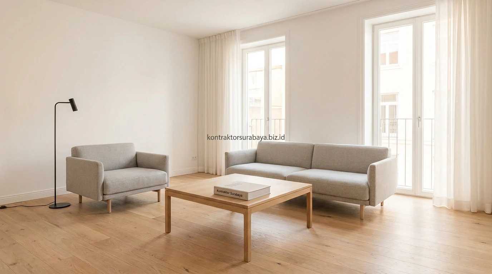

Konsep hunian bergaya Scandinavian atau Nordic semakin diminati oleh kalangan keluarga muda di kawasan Sidoarjo—seperti di Waru, Sedati, Gedangan, hingga Kahuripan Nirwana. Gaya ini mengedepankan prinsip kesederhanaan, fungsionalitas ruang yang efisien, dan penciptaan suasana rumah yang senantiasa hangat serta menenangkan.
1. Ciri Utama Gaya Scandinavian pada Rumah Minimalis
Warna netral terang, material kayu natural, garis desain yang bersih, dan pencahayaan alami maksimal adalah empat ciri utama yang membedakan gaya Scandinavian dari gaya minimalis lainnya:
- Warna Netral Terang: Dinding bercat putih atau abu-abu muda mendominasi interior dan eksterior untuk memantulkan cahaya secara merata.
- Material Kayu Natural: Aplikasi lantai vinyl motif kayu atau aksen kayu conwood memberi kehangatan visual yang menyeimbangkan dominasi warna putih.
- Garis Desain yang Bersih: Fasad atap pelana tinggi tanpa ornamen berlebih menonjolkan kesan fungsional dan rapi.
- Pencahayaan Alami Maksimal: Bukaan jendela kaca besar dan pintu geser menghubungkan area dalam dengan taman secara transparan.
2. Material dan Palet Warna Khas Scandinavian
Kayu pinus atau oak berwarna terang, palet putih dan abu muda, tekstil bertekstur wol atau rajut, dan aksen hitam matte adalah empat elemen material dan warna khas gaya Scandinavian:
- Kayu Berwarna Terang: Digunakan pada lantai, perabot furnitur, dan panel dinding untuk menghadirkan aura natural.
- Palet Putih & Abu Muda: Menjadi latar netral yang membuat ruangan terasa lebih lega, bersih, dan terang.
- Tekstil Bertekstur Lembut: Karpet berbahan katun rajut atau linen sofa menambah kenyamanan saat berkumpul bersama keluarga.
- Aksen Hitam Matte: Diterapkan pada rangka jendela aluminium atau kap lampu gantung untuk memberi kontras modern yang tegas.

3. Bagaimana Pencahayaan Alami Menjadi Elemen Utama Desain Scandinavian?
Jendela besar tanpa banyak sekat dan penempatan furnitur yang tidak menghalangi cahaya membuat pencahayaan alami dapat menjangkau seluruh sudut ruangan pada rumah bergaya Scandinavian.
Gaya ini lahir dari kebutuhan memaksimalkan cahaya matahari yang terbatas di negara asalnya, sehingga penerapannya selalu mengutamakan bukaan jendela yang lebar dan tata letak furnitur yang tidak menghalangi jalur cahaya dari luar ke dalam ruangan.
"Kunci keberhasilan rumah Scandinavian di iklim tropis adalah memadukan estetika cerah yang hangat dengan rekayasa ventilasi silang agar hunian tetap adem sepanjang hari."
4. Furnitur Fungsional dengan Estetika Sederhana
Furnitur dengan bentuk sederhana, fungsi ganda, dan minim detail dekoratif mencerminkan filosofi gaya Scandinavian yang mengutamakan kepraktisan tanpa mengorbankan estetika.
Pemilihan furnitur pada rumah bergaya ini cenderung menghindari ukiran atau ornamen rumit, dengan fokus pada bentuk geometris sederhana dan material alami yang tetap terlihat menarik meski tanpa banyak detail tambahan.
5. Penerapan Gaya Scandinavian pada Iklim Tropis Sidoarjo
Penambahan ventilasi silang dan pemilihan material kayu dengan lapisan anti lembap membantu gaya Scandinavian tetap nyaman diterapkan pada iklim tropis Sidoarjo yang lebih panas dan lembap.
Berbeda dengan iklim asalnya yang dingin, penerapan gaya Scandinavian di daerah tropis perlu memperhatikan sirkulasi udara tambahan serta pemilihan material kayu yang tahan terhadap kelembapan, agar tampilan tetap terjaga tanpa mengorbankan kenyamanan termal penghuni.
6. Kesalahan Umum Menerapkan Gaya Scandinavian di Rumah Tropis
Menggunakan kayu tanpa lapisan pelindung, mengabaikan ventilasi tambahan, memilih tekstil tebal yang tidak sesuai iklim panas, dan pencahayaan buatan yang terlalu putih adalah empat kesalahan umum penerapan gaya ini di iklim tropis:
- Kayu Tanpa Lapisan Anti Lembap: Berisiko membuat material cepat berjamur atau lapuk akibat kelembapan udara tropis.
- Mengabaikan Ventilasi Tambahan: Membuat ruangan terasa pengap meskipun tampilannya sudah serba putih dan bersih.
- Memilih Tekstil Terlalu Tebal: Penggunaan kain wol tebal tanpa penyesuaian membuat ruangan terasa gerah saat siang hari.
- Lampu Penerangan Terlalu Putih: Dapat menghilangkan kehangatan visual yang menjadi ciri khas utama gaya hunian ini.
Setiap rumah memiliki kondisi lahan dan orientasi yang berbeda, sehingga penerapan gaya Scandinavian perlu disesuaikan melalui konsultasi langsung dengan tim kontraktor. Lihat referensi hasil proyek lainnya pada galeri proyek kami, atau pelajari alur kerja sama pada halaman jasa kontraktor rumah.